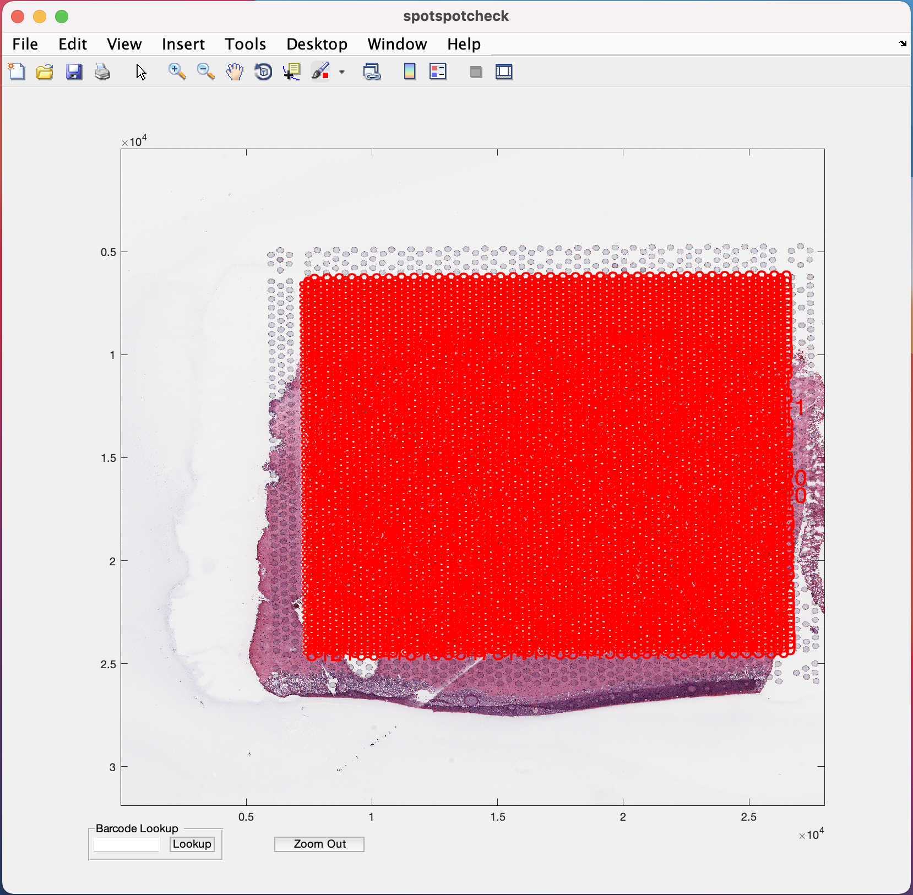

4 Step 4: GUI to count nuclei in a Visium spot
4.1 spotspotcheck
The GUI is used for
1. Obtaining nuclei count per Visium spot and saving it to a csv.
2. Performing quality check on the nuclei segmentations (from Step2) by allowing the user to zoom in/out and toggle between the nuclei segmentation and Visium histology images. The GUI overlays the spot grid on to the Visium histology and segmentation images for the user to clearly see the nuclei inside a spot.
3. Allowing the user to search for a spot with its associated barcode ID.
To open the GUI, the spotspotcheck function should be executed in the MATLAB command prompt like below.
spotspotcheck
loading.....Start Window : A start window opens up like below. If you donot have the tissue_spots_counts.csv already, generated from the command line function countNuclei, the option to
Get Cell Countson the window should be checked.
Then you hit the
Startbutton, which opens up the following window.Select Histology Image : This window asks you to select the capture area tif that you want the nuclei counts for, or to perform quality check on nuclei segmentations.

Select the capture area tif and hit the
Openbutton on window, which opens the following window.Select Segmented Mat File : This wondow asks for the final segmented
.matfile of the nuclei segmentations.
Select the .mat file and hit the
Openbutton.Select Scale Factors JSON File : Select the scalefactors_json.json file with the Visium spot metrics obtained from the
spacerangersoftware.
Select Tissue Positions/Spot Counts File : If the
Get Cell Countsoption is checked in the Start window then select tissue_positions_list.csv obtained from Spaceranger, otherwise select tissue_spot_counts.csv obtained from countNuclei function.
spotspotcheck GUI opens up, shown below


+) option is provided in the menubar at the top of the GUI (Note the position of this option on the GUI may change depending on the version of MATLAB being used, but it is always represented by the + symbol). Selecting/clicking this option opens a cursor with + symbol, which lets the user select a rectangular region of interest to zoom in to, like the image below. The Zoom Out button at the bottom of GUI is used for the images to return to their original size on GUI.

To toggle between histology/segmented images when zoomed in, the cursor should return to its normal function by un-clicking the zoom in (symbol of magnifying glass with +) option.


Barcode Lookup provides user to input the barcode ID of the specific Visium spot the user want to look at. For example, if we want to look at the 1st Visium spot on this image, paste the barcode ID of the spot (from tissue_spot_counts.csv) into the white space and hit the Lookup button. It opens up the image where ever this spot is located.

4.2 countNuclei
This function can be run on MATLAB command prompt to obtain the tissue_spot_counts.csv file without going through the spotspotcheck GUI.
Inputs to the function are
1. Filename with full path for the mat file of the final nuclei segmentation.
2. Filename with full path for the scalefactors_json json file.
3. Filename with full path for the tissue_positions_list csv file.
mask = '/path_to_capture_area_segmentation/Lieber_Institute_OTS-20-7690_rush_anterior_A1_nuclei.mat';
jsonname = '/path_to_scalefactors_json/scalefactors_json.json';
posname = '/path_to_tissue_positions_list/tissue_positions_list.csv';
countNuclei(mask,jsonname,posname)
loading data
Elapsed time is 4.216505 seconds.
84385 cells detected
4992 spots detected
counting nuclei per spot
100 spots finished in time 77.1357s
200 spots finished in time 140.8369s
300 spots finished in time 204.5829s
400 spots finished in time 267.4467s
500 spots finished in time 335.6774s
600 spots finished in time 403.0874s
700 spots finished in time 467.4493s
800 spots finished in time 534.8536s
900 spots finished in time 602.1899s
.
.
.The countNuclei function generates a nuclei count file listed below. The file is saved in the same path as the tissue_positions_list.csv that we give to the function.
1. tissue_spot_counts.csv